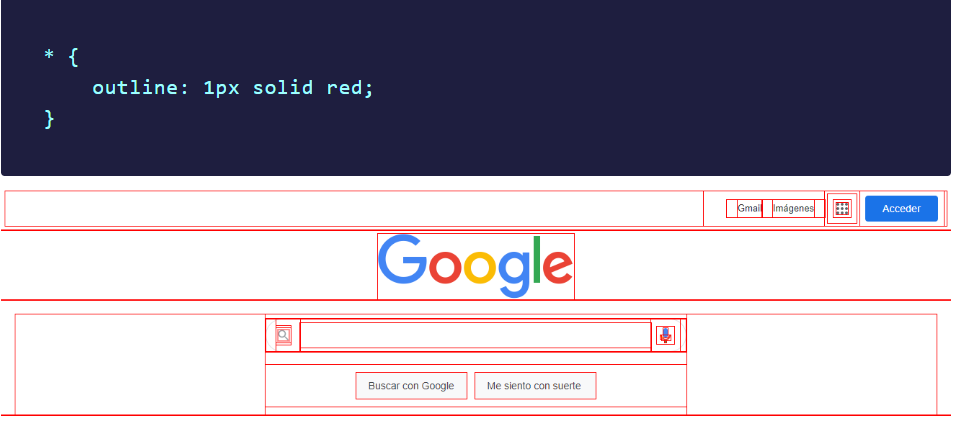

Diseño en CSS
Aunque usted visualice en un sitio web algún elemento diseñado en CSS
que utiliza border-radius para parecer un círculo, ese elemento seguirá siendo rectangular
Ejemplo, con ayuda de la propiedad outline, podemos ver todos los elementos de la pagina de inicio de Google de forma rectangular.
